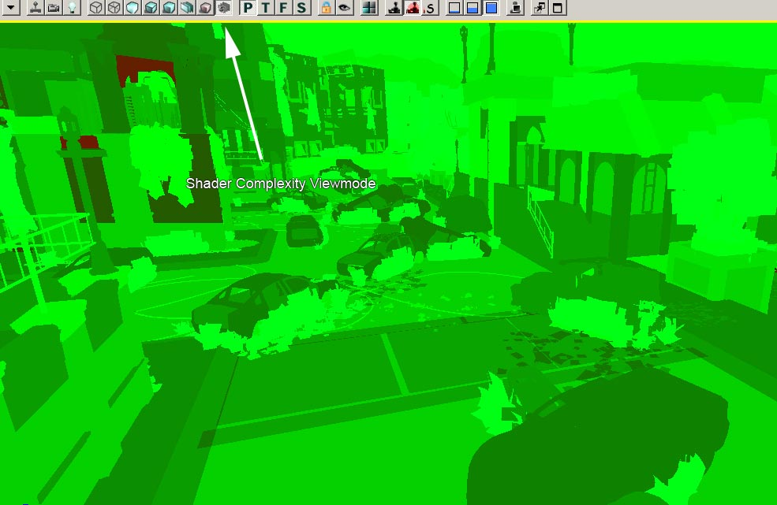
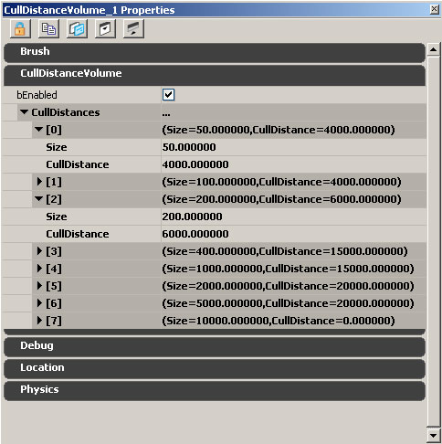

UDN
Search public documentation:
LevelOptimization
日本語訳
中国翻译
한국어
Interested in the Unreal Engine?
Visit the Unreal Technology site.
Looking for jobs and company info?
Check out the Epic games site.
Questions about support via UDN?
Contact the UDN Staff
中国翻译
한국어
Interested in the Unreal Engine?
Visit the Unreal Technology site.
Looking for jobs and company info?
Check out the Epic games site.
Questions about support via UDN?
Contact the UDN Staff
UE3 Home > Performance, Profiling, and Optimization> > Level Optimization Guide
Level Optimization Guide
Overview
In Unreal Engine 3, interactions between lights and objects are responsible for the majority of CPU and GPU work that needs to be done to render a level. When optimizing content in a level, the best place to start is usually by examining how things are lit. Also check out: Mastering Unreal Level OptimizationCPU Overhead
On the CPU side, the major expense of lighting lies in figuring out what objects need to be rendered, and whether or not they are using light environments; and if so, which type of light environment they are using. Since most games using UE3 Have a lot of dynamicly lit moving objects, it is easy to use too many light environments. There are several settings, however, that you can use to reduce the cost of light environments. Here are the light environment settings from most expensive to least (on the game thread) and when they should be used: 1) bEnabled=True, bDynamic=True (the default) These should only be used where needed, they will update based on InvisibleUpdateTime and MinTimeBetweenFullUpdates. There probably shouldn't be more than 50 of these active at any given time. They do extra visibility checks when visible, close to a player or when they are moving. 2) bEnabled=True, bDynamic=False, bForceNonCompositeDynamicLights=True These should be very cheap, the environment is updated on the first tick and never again. bForceNonCompositeDynamicLights is necessary to allow dynamic lights to affect them, which doesn't have any significant game thread overhead. There can be hundreds of these, the only cost (after the first tick) will be line checks to dynamic lights (and only when the owner is visible). These look better than using precomputed shadows because they can rotate and the lighting will still be correct. They are used by fractured meshes, GDO's, and some other things. 3) bEnabled=False, bUsePrecomputedShadows (on the primitive component)=True (also have to take it out of the dynamic channel and put it in the static lighting channel) These will be lightmapped, very cheap to render and should have virtually no game thread overhead (except that the UDynamicLightEnvironmentComponent::Tick function is still called). They will look wrong when moved. You can also type 'SHOWLIGHTENVS' in the console and you will get a list of all environments that got ticked that frame. The output in UnrealConsole should look like: Log: LE: SP_MyMap_01_S.TheWorld:PersistentLevel.InterpActor_12.DynamicLightEnvironmentComponent_231 No_Detailed_Info_Specified 1 Log: LE: SP_MyMap_01_S.TheWorld:PersistentLevel.InterpActor_55.DynamicLightEnvironmentComponent_232 No_Detailed_Info_Specified 0 Log: LE: SP_MyMap_01_S.TheWorld:PersistentLevel.InterpActor_14.DynamicLightEnvironmentComponent_432 No_Detailed_Info_Specified 1 ... A '1' at the end of the line means bDynamic is set to TRUE. The other command you can try to retrieve all the dynamic lights in the level is 'GETALL' command. For example, type 'GETALL DynamicLightEnvironmentComponent bDynamic' will show all DynamicLightEnvironmentComponent and the flag for bDynamic. The difference between 'SHOWLIGHTENVS' and 'GETALL' is that 'SHOWLIGHTENVS' shows every environments 'TICKED' at that frame where as 'GETALL' displays all of environments whether they ticked or not. Another major CPU expense is the overhead associated with driver state changes. With our multi- threaded renderer this usually is only a factor on single CPU systems. TheSTAT SCENERENDERING console command lists occluded primitives, visible static mesh elements and visible dynamic primitives and can be used to determine how many individual primitives are being rendered each frame.
It is fairly hard to pin down driver CPU overhead or GPU time spent on the PC. The asynchronous nature
of modern GPUs can often result in seemingly random calls appearing taking more time than usual, when in fact these calls are typically waiting for the GPU to finish before they can proceed. The engine synchronizes with the GPU each frame and reports the per thread wait time in STAT THREADING. A high Game thread idle time means that the rendering thread is slower and a high Rendering thread idle time means the gameplay code is the bottleneck. In case of game thread idle time being high, trying different resolutions can be used to determine whether the rendering thread is CPU or GPU bound.
GPU Overhead
For the GPU, having to render a pass per light per object can be quite expensive for objects covering a large portion of unoccluded screen space. The main limiting factor on the GPU is usually shader throughput. For example, having an object lit by three lights, in addition to suffering the additional per-pass overhead, will cause the lighting equation and material to be evaluated three times. At higher resolutions (for example, 1280x720 - commonly referred to as 720P), even high end GPUs can become the bottleneck, at frame times of around 30ms. The main cost of lit dynamic scenes at these resolutions is using shadow buffers, as they use a very expensive shader to blur the shadow edges. There are various approachs to optimizing this with different trade-offs with respect to visual fidelity. Also, post processing at any resolution is a constant overhead that can be optimized. Console-specific tools or nvPerfHUD on the PC can be used to get a much more detailed picture of what is taking time and why. For general optimization, however, the biggest bang for the buck is usually making sure your levels follow the guidelines below.Stats
In general, stats commands can be used for various asset types in a level. See the Stats Descriptions page for detailed descriptions of stat commands supported by the engine.Lightmaps
Overview
Lightmaps have the benefit of reducing both CPU and GPU load. On the CPU side, fewer light-object interactions need to be taken into account; as far as the engine is concerned, the objects aren't relevant to the light, as all lighting information has been baked into the lightmap. On the GPU side, the object doesn't have to be rendered in multiple passes and additionally the lightmap pass is collapsed into the emissive pass to further reduce the number of passes and induce state change overhead.VIEWMODE LIGHTCOMPLEXITY and the associated Editor button can be used to visualize how many non- lightmapped lights are affecting an object. The color scheme is as follows:
| Lights | Mesh Color |
| 0 | (R=0,G=0,B=0,A=1) |
| 1 | (R=0,G=255,B=0,A=1) |
| 2 | (R=63,G=191,B=0,A=1) |
| 3 | (R=127,G=127,B=0,A=1) |
| 4 | (R=191,G=63,B=0,A=1) |
| 5 | (R=255,G=0,B=0,A=1) |
Usage
Overall, lightmaps are a clear win from a performance point of view. The two ways to invoke the use of lightmaps are either setting UseDirectLightMap to true on the light or settingbForceDirectLightMap to TRUE on the primitive (terrain, static mesh, skeletal mesh, ...). Like other precomputed shadowing information, lightmaps can only be used on static objects. See the LightingReference for details.
The downside of lightmaps is that the engine has no way of knowing the contribution of a single light to the lightmap, meaning that general dynamic shadowing becomes impossible. In other words, a dynamic object cannot cast a shadow from a light onto a static mesh if said light is part of the lightmap. A workaround for this limitation are modulated shadows as they project onto any surface though have their own share of drawbacks.
LightMaps vs. Vertex Lighting
See the attached LightMapVSVertexLightingCosts.xlsx spread sheet for the cost comparison. Also keep in mind that vertex lighting and lightmap data are handled very differently memory-wise. All lightmap data is put into the streaming-texture pool, so those texture will not be adding to the actual memory footprint. Vertex lighting however, is always stored in system memory and is a constant memory overhead when a level is loaded. 'Stat memory' reports a vertex lighting field, generally this number should be as low as possible, and if you are having memory issues, the first thing you can do is make sure you are using lightmaps whenever possible. This is especially true when using fracture meshes, as the polycount tends to be quite high with fracture meshes, so vertex lighting will really eat memory.Dynamic Shadows
Overview
Another potential source of performance problems is dynamic shadowing. A quick way to gauge whether dynamic shadowing has an impact on performance is to toggle it off via theSHOW DYNAMICSHADOWS console command. It is advisable to bind a key to this command, so that while the key is pressed dynamic shadows are turned off and then enabled again when the key is released. This can be done from the console - for example: SETBIND F SHOW DYNAMICSHADOWS | ONRELEASE SHOW DYNAMICSHADOWS.
Performance limitations with dynamic shadows
The GPU cost of shadow buffers is directly proportional to the screenspace size of the shadow frustum. This means a nearby character using shadow buffers is much more expensive than a far away one. It also means that a large object casting a dynamic shadow buffer shadow is much more expensive than a small one. See the Shadow Buffer Filtering Options page for more details. Also see the Shadowing Reference page and Modulated Shadows page for more shadow optimizations.Static Meshes and other Primitives
Overview
A common source of performance problems is in Static Meshes. In general, you should replace any Static Meshes that are used only once or twice, and replace them with similar ones that are already used frequently. Try to avoid using unique meshes for skyboxes whenever possible. Whenever possible, apply the proper trade-off for vertex lighting vs. lightmap lighting. You can also use the Primitive Stats Browser to look for biggest bang for the buck optimizations (sort by instanced triangle count).Primitives Stats Browser
What follows is a description of the columns in the Primitive Stats Browser (formerly Static Mesh Stats Browser):- Type - Type of the resource, either skeletal mesh, static mesh, terrain or BSP (model)
- Count - Number of instances of that mesh in the level.
- Triangles - Triangle count per instance.
- Resource Size - Size of resource in KByte as reported by "view resource usage", only relevant for static and skeletal meshes
- Lights (avg LM/ other/ total) - Average number of lightmapped (LM), non lightmapped (other) and total lights affecting each instance.
- Obj/ Light cost - The object/ light interaction cost. This number indicates how many times this static mesh is going to be re-rendered for lighting purposes. It is the number of non-lightmapped lights times the total sections count of all instances. Lightmaps are not included in this number, as they are rendered as part of the emissive pass and are therefore can considered "free".
- Triangle cost - The number of triangles that need to be rendered for lighting purposes. This number excludes the z-prepass, emissive and lightmaps as those are constant overhead regardless of the number of lights.
- Lightmap - The amount of memory used by lightmap data.
- Shadowmap - The amount of memory used by shadowmap data.
- LM Res - The average lightmap resolution per instance.
- Sections - The number of sections this mesh has.
- Radius (min/max/avg) - Min/max/average radius of the bounding box for each instance of the mesh.
Materials
The complexity of the materials in a scene can greatly affect the GPU overhead of the scene. The more dynamic lights that are used, the more costly an expensive material becomes. The editor offers a Shader Complexity Viewmode, and it looks like this:  Lighter shades of green mean the material is fairly cheap, darker shades indicate a more expensive material, or multiple dynamic lights affecting. Note that to see an accurate representation of shader complexity, the level must have lighting rebuilt. Tips for optimizing materials:- Try and limit the amount of Dependent Texture reads, this means modifying UVs with a texture, such as BumpOffset.
- Use Material Instancing, and use StaticSwitchParameters for expensive effects so that they can be toggled on/off easier to make performance tradeoffs.
- Consider removing specular from materials that do not have very much specular. This removes a significant amount of pixel shader instructions and in many cases is not noticeable.
- Try and limit the number of texture lookups in each material, the more texture lookups the longer it will take the GPU to get the textures it needs.
Decals
Static Decals that are placed in the level can eat up performance quickly if not handled properly. If left unchecked, they will project onto extra meshes that are not necessary, and this will skyrocket the amount of Sections that have to be rendered. They should be set to only affect the static meshes/BSP that they need to affect, since this can significantly reduce section count. For more information on using decals and the Decal System, see the UsingDecals#Controlling receiving surfaces page.Skyboxes
Overview
Skyboxes usually contain very large objects whose bounding boxes/spheres encompass large portions of the world. This has several notable side effects. Firstly, objects intersecting the near clipping plane will not use occlusion queries and always be rendered, even if no pixels of the mesh are visible. This is usually not a big deal for unlit domes that aren't affected by light, as the engine first renders a depth pass to maximize the utility of early hardware z-rejection. There can be some cost associated with state changes and additional overhead if your skybox is lit and hit by many lights. The skybox's bounding box being the size of the entire world suggests that every single light in the world that isn't explicitly excluded via either the lighting channel or manual exclusion functionality is affecting the skybox. This makes skybox actors a prime candidate for havingbForceDirectLightMap set to TRUE and bAcceptsDynamicLights to FALSE so it doesn't get re-rendered for every single dynamic light in the level (e.g. muzzle flashes). Changing the skybox actors to neither have collision nor accept decals is also generally a good idea.
For unlit moving or rotating objects in the skybox, it is usually best to set bAcceptsLights to FALSE to avoid much work on the CPU side that is necessary done regardless of whether the material is lit or not.
Quick summary
A quick summary of what to do for skyboxes:- Disable collision and ability to receive decals;
- Set
bAcceptsLightsto FALSE for unlit objects; - Set
bAcceptsDynamicLightsto FALSE for other objects; - Use the skybox lighting channel if needed and either set skybox objects to force LM or force LM on lights.
- Disable
CastShadowon skybox where appropriate and disablebCastDynamicShadow.
Explanation of common properties
Primitive component
- CastShadow controls whether the primitive component should cast a shadow or not. Currently dynamic primitives will not receive shadows from static objects unless both this flag and bCastDynamicShadow are enabled.
- bCastDynamicShadow controls whether the primitive should cast shadows in the case of non precomputed shadowing -- for example, when the primitive is between a light and a dynamic object. This flag is only used if CastShadow is TRUE. Currently, dynamic primitives will not receive shadows from static objects unless both this flag and CastShadow are enabled.
- bForceDirectLightMap forces the use of lightmaps for all static lights affecting this primitive even though the light might not be set to use light maps. This means that the primitive will not receive any shadows from dynamic objects obstructing static lights. It will correctly shadow in the case of dynamic lights
- bAcceptsLights controls whether the primitive accepts any lights. A nice optimization, and should be set to FALSE for any objects that do not require lighting.
- bAcceptsDynamicLights controls whether the object should be affected by dynamic lights.
- LightingChannels define what lights can affect this primitive.
Light component
- CastShadows controls whether the light should cast shadows.
- CastStaticShadows controls whether the light should cast shadows from objects that can receive static shadowing.
- CastDynamicShadows controls whether the light should cast shadows from objects that cannot receive static shadowing.
- bForceDynamicLight forces the use of shadow volumes/stencil shadows. This avoids potential issues with cubemaps and also avoids any memory used for static shadowing.
- UseDirectLightMap determines whether to use lightmaps for this light.
- LightingChannels define which primitives this light can affect.
Misc
Unlit translucency
Unlit translucency can have a severe impact on performance if there is significant overdraw with a complex material. An easy way to gauge its performance impact is to either toggle its use viaSHOW UNLITTRANSLUCENCY on the console, or unchecking the respective show flag in the Editor viewport.
Tips: - Check performance on target platform via
SHOW UNLITTRANSLUCENCY. - Use
VIEWMODE SHADERCOMPLEXITYto visualize. - Avoid layering, especially for light cones and stuff.
- Make use of cull distance where possible.
BSP
Lighting flags
BSP is split into chunks, based primarily on location. This implies that individual BSP segments (model components) are moderately large and are thus hit by several lights. One way to control the light/BSP interaction is to make use of the BSP lighting channel and the "Accepts Lights", "Accepts Dynamic Lights" and "Force LightMap" surface options. Changing these options will only have affect when BSP is rebuilt, as those flags are propagated to the BSP chunks, and the chunks are created in part based on those options. They directly correspond to bAcceptsLights, bAcceptsDynamicLights and bForceDirectLightMap on primitive components. Using these flags can significantly increase performance for levels that make elaborate use of BSP.Run the 'Clean BSP materials' tool
Run the CLEANBSPMATERIALS editor exec (accessed in UnrealEd via the 'Clean BSP Materials' option in the 'Tools' menu) to clear references held by brushes to materials for those faces that don't exist in the final BSP. Examples include 'add' brushes fully contained by additive space, 'cospatial' polys (e.g. abutting cubes that share a face), etc. Note that this operation should only be performed after a level's BSP is finalized. Because material references on hidden faces are cleared, if the BSP is later edited so that hidden brushes become visible, material assignments will need to be reapplied to these newly-visible faces. This feature appears in QA_APPROVED_BUILD_JUN_2007.Use 'RemoveSurfaceMaterial'
The EngineMaterials package contains a special material called RemoveSurfaceMaterial that should be applied to all BSP surfaces that the player will never see. Under the hood, BSP surfaces marked with this material will not contribute renderable triangles to the BSP mesh, nor will they receive any static lighting (and consume associated lightmap real-estate). Surfaces marked with RemoveSurfaceMaterial are visible in the editor and in PIE so that designers can test the surfaces for visibility and revert the material as necessary. However, they're not visible when the game is run outside of the editor. This feature appears in QA_APPROVED_BUILD_JUN_2007.Levels
Here are some tips for optimizing levels:- Make sure skybox is unlit, doesn't accept decals, lights, doesn't collide
- In the Primitive Stats Browser, sort by count and instanced triangles:
- Eliminate/ reduce instances for meshes that are used a lot.
- Make sure simplest mesh is used for high inst. triangle counts (for example if 2000 triangle is used 100 times, consider using 200 triangle column).
- Use collision view modes to disable collision where not needed.
- Play the game to see what is visible, often times meshes are added that are not visible when playing the game normally as Editor viewpoint doesn't match where the player moves, eye height, etc.
- Make sure there are no meshes hidden below the world, inside geometry, etc.
- Mark all BSP surfaces that are no visible as to not accepting lighting.
- Set default texture on invisible BSP surfaces.
- Use
VIEWMODE LIGHTCOMPLEXITYto ensure level is black where there are no dynamic lights:- Only use toggleable lights of small radius.
- Don't use toggleable directional lights.
- Keep total static mesh and static mesh section count under budget.
Cull Distance Volumes
Unreal Engine has used CullDistance to cull objects based on distance for a while now. If you can cull a significant number of your objects, it will cut down on the visible elements and the occlusion time, it can be a big performance boon. Rather than spend time setting CullDistance by hand, we assign it automatically based on CullDistance Volumes. A CullDistance Volume is a volume, and the actor has an array. Each field added to the array has a CullDistance and Size setting. When you save the level, the editor will check the diameter of the bound sphere of every object in the level, and assign it a cull distance automatically based on which Size category it most closely matches. To add a CullDistance volume, make the builder brush large enough to encompass your whole level, right click the "Add Volume" button, and select "CullDistanceVolume" from the list.  To set up the CullDistance Volume, start by creating the CullDistance for your smallest objects, and adjust the distance/size of that field until you can barely see small objects popping in/out in the distance. Then you create the next largest one (with a slightly further culldistance), until you finally hit the largest mesh that you are willing to automatically cull. A CullDistance of 0 means it will not be culled. In the example image above, no mesh that is approximately 10,000 units or larger will use CullDistanceVolumes. The distances should be tweaked until you cannot see any obvious popping. A mesh can 'opt out' of CullDistanceVolumes by setting the following flagStaticMeshComponent.Rendering.bAllowCullDistanceVolume=False
The non-editable field CachedCullDistance displays the cull distance currently assigned to a mesh from cull distance volumes.
See the Visibility Culling page for more details.
Terrain
Here are some tips for optimizing terrain:- Use patch bounds view.
- Use wireframe to sanity check tessellation.
- See the Terrain Reference? page for more details.
Audio
Here are some tips for optimizing audio:- Ensure that multiple music tracks aren't being used unless they are absolutely necessary. It's a good idea to keep music tracks in their own streaming maps so that they can be streamed in and out when they are needed(this will not affect performance, but it will affect the overall level budget).
- Check budget via
STAT AUDIO,STAT MEMORY. - Use
LISTSOUNDSto see what is the currently loaded sounds - displays waves stored on a per group basis so you can see what types of sounds take up the most memory. -
LISTWAVESlists the currently playing sounds (PC only). -
LISTAUDIOCOMPONENTSlists the currently considered sounds.
Textures
Unreal Engine 3 Uses a Texture Streaming Pool. This means that all streaming textures have a total known memory footprint, and the engine will do its best to load only textures that are large/near the player at the highest resolution. However it still leaves the potential for you to add too many textures and cause blurryness everywhere. In this case, the only way to fix it is to cut your texture usage down to realistic levels. Here are some tips for optimizing textures:- Check STAT STREAMING and streaming fudge factor. If this number is at 1.0 then you have nothing to worry about, anything higher than 1.0 means that the textures do not fit and some of them will be blurry.
- Use
LISTTEXTURESto see what is loaded. This will spit out a list of textures that are loaded into the log. This information can be copied into excel, and automatically organized into rows/columns by pressing the "Text to Columns" button (under Data), and choosing Delimited->Comma-> finish. Then press sort to allow you to sort each row by ascending or descending order. - Once you have a listtextures output into excel, sorting by DESCENDING in the "Current Size" row, and you can use that to start analyzing the worst-case-offenders..... the textures that are taking up the most memory.
Particles
Here are some tips for optimizing particles:- Disable collision on minor stuff (in UT the Enforcer weapon sparks used collision!).
- Avoid overdraw.
- Use PIX and
VIEWMODE SHADERCOMPLEXITY. - Use
STAT PARTICLESto see count. - Manually set bounding boxes for common effects or large ones.
- Ensure Editor generated max active counts are sane.
- See the Particle System Reference page for more details
- Use
MEMORYSPLIT, it will show how much particle data is currently loaded as Active and how much is could be loaded as Peak (the max possible memory that could be allocated to particles at one time).
Animation
Here are some tips for optimizing animations:- Make sure all animations are compressed:
- If there is a reason not to compress, follow up with programmer.
- There really shouldn't be a reason not to compress; and it's a bug if it doesn't look good.
- Stitched together cinematics need to be baked and pruned.
-
OBJ LIST CLASS=ANIMSET. -
OBJ LIST CLASS=ANIMSEQUENCE.- If an anim sequence is loaded all anim sequences in set will be loaded!
Physics
In general, turn on rigid body collision view (you can useSHOW RIGIDBODY at the console). Then set BlockRigidBody to FALSE on anything that vehicles or ragdolls can't collide with. For large high structures, you might want to turn off rigid-body collision for all meshes and put a big blocking volume over it.
Other Considerations
Previous generation optimizations that no longer work
A common optimization in previous generation PC titles was to merge smaller objects with the same materials into larger ones. This is not advisable with this generation due to the increased impact of object/light interaction. A larger object will be touched by more lights and will be considered for shadowing by more dynamic objects.Verify loaded content in-game (not in-editor)
You can make sure only vehicle and weapon assets that are loaded are being used by running theOBJ LIST CLASS=SKELETALMESH command. Follow up with gameplay programmer if this is proven otherwise. For example, in the past we've had issues where certain Kismet actions referenced too much content.
Other useful commands: - LISTSOUNDS for audio
- LISTTEXTURES for textures
Run analyzereferencedcontent commandlet
Make sure there are no meshes with excessive convex hull counts. Also try to optimize the most-used meshes. Optimize worst case material offenders, especially once used a lot.
CommandletList#analyzereferencedcontent
Platform Specific Debugging
It is always important to test performance and memory on the platform that you plan to ship on. The debugging tools in the editor will help you sort out the worst offenders, but the only way to truly optimize your content for a shipping product is to analyze how it is running on the target platform. See the Stats Descriptions page for detailed descriptions of stat commands supported by the engine. Note that memory also comes with fragmentation (whether system fragmentation or internal engine fragmentation). This means you need to have a buffer of % of total usage depending on how your game uses. Say you're using 200 mbs, then you'd like to expect fragmentation of % depending on how game got to the point. This fragmentation could get worse as game session gets longer, but it should not be linear. It will converse to the point where worst could be. (Could be 10% or 20%) Please consult programmers.PC
For PC testing it's important to constantly gather stats on a PC that fits within your Target Minimum Spec range, as well as make sure that all material fallback options are working correctly.Playstation 3
Forthcoming.Xbox 360
It's very important to check all texture streaming, memory and performance issues and stats on an actual devkit since results can vary from the PC. The most important tool for debugging performance issues on the xbox is Microsoft's Performance Investigator for Xbox (PIX).Performance Investigator for Xbox (PIX)
Please refer to the PIX documentation on the MSDN.- LightMapVSVertexLightingCosts.xlsx: updated to take into account N instances